Making AI model access understandable
AI model access is complex across enterprise teams. Administrators need a clear way to see how permissions, usage limits, and model configuration work together. I redesigned the governance experience in Red Hat OpenShift AI to connect these pieces into a clearer, more actionable view, helping administrators audit access, uncover configuration gaps, and investigate issues.
- My role
- Primary Product Designer
- Team
- 2 Product Managers, 3 frontend engineers, 3 backend engineers, 1 Principal Product Designer, 1 Content Designer, 4 Field and Customer Adoption specialists, and me
- Timeline
- 2 months
- Product
- Red Hat OpenShift AI
- Tools used
- Cursor, Figma, Miro, Google Docs
The challenge
Administrators had to piece together models, groups, permissions, and usage limits across separate pages. That made incomplete setup hard to spot and urgent access problems harder to investigate.
My contribution
I led the workflow workshop, reframed the problem, explored and tested interactive directions, revised the navigation, and partnered with product, engineering, UX, and customer-facing specialists.
What shipped
A new Overview page, updated MaaS Governance navigation, and improved Subscription and Authorization Policy settings pages.
A short demo of the redesigned experience
Silent walkthrough (1:04 mins): Expand a model row, inspect its related subscriptions and authorization policies, and select a group label to trace its connections. Use handy filters to see specific information. The decisions behind these interactions follow below.
Two settings determine access to a shared model
Red Hat OpenShift AI (RHOAI) helps organizations develop, deploy, and manage AI models. Its Models-as-a-Service (MaaS) capability lets teams use shared language models through governed access. Administrators manage access for user groups, which can represent teams within an organization.
For a group to use an available model, two things need to be in place: access and a subscription. An authorization policy gives the group access to the model’s endpoint, while a subscription defines how much the group can use the model by setting token rate limits, which control the amount of text it can process over time.
When someone cannot use a shared model, an administrator needs to work out which part of its setup needs attention. Neither setting alone tells the full story. An administrator needs to see the model, group, authorization policy, and subscription together to understand whether access has been configured.
A simplified concept diagram mapped during discovery to illustrate how models, groups, policies, and subscriptions connect.
Models
Available models
- Granite-3B
- Mistral-7B
- Llama-3-8B
- GPT-4o-mini
Unavailable models
- Phi-3
- Claude-3.5
Unavailable models are never callable, even if governed.
Groups
data-science
user #1 · user #2 · user #3
analytics
user #2 · user #5 · user #11 · user #13
engineering
user #4 · user #6 · user #7 · user #8 · user #9
Authorization policies Who is permitted to call a model?
Policy A
Groups data-science, analytics
Models Granite-3B, Mistral-7B, Phi-3
Policy B
Groups engineering
Models Granite-3B, Llama-3-8B
Subscriptions What usage allowance applies?
Subscription 1
Groups data-science
Models Granite-3B, Mistral-7B, Phi-3
Subscription 2
Groups engineering
Models Granite-3B, Llama-3-8B
Can they call it?
Can data-science call Granite-3B?
- Are both in an authorization policy? Yes, Policy A
- Are both in a subscription? Yes, Subscription 1
- Is the model available? Yes
Callable
Can analytics call Granite-3B?
- Are both in an authorization policy? Yes, Policy A
- Are both in a subscription? No matching subscription
- Is the model available? Yes
Not callable
Can data-science call Phi-3?
- Are both in an authorization policy? Yes, Policy A
- Are both in a subscription? Yes, Subscription 1
- Is the model available? No
Not callable
Looking beyond the original brief
Project kickoff
The project brief described how administrators had to compare similar-looking Subscription and Authorization Policy tables to work out which groups could use a model and what limits applied. To connect a group’s permission with its usage allowance, they opened details, remembered names, switched pages, and compared the information manually.
My initial hypothesis was that administrators struggled because Subscription and Authorization Policy information was separated across Settings. That described the interface, but it did not yet explain which relationships mattered in a real investigation or what someone needed to do next.
Understanding the administrator's workflow
I led a workshop with product managers, engineers, and a UX colleague. Using existing product personas, I mapped the journey from making a model available to configuring access, using it, and investigating problems. I drafted job stories with Cursor (using Anthropic’s Claude models), then edited them for accuracy. In the workshop we challenged assumptions, identified gaps, and prioritized opportunities.
High-level user flow: From publishing a model to using it

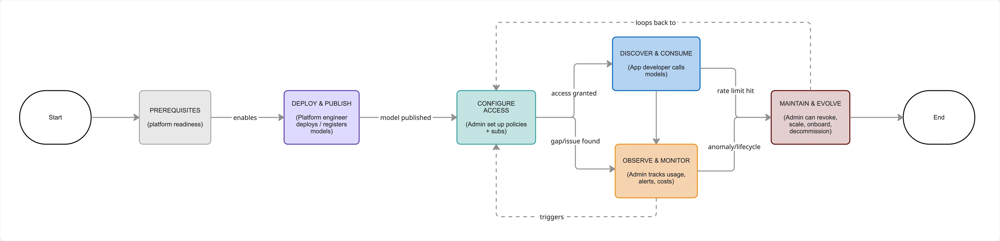
EnlargeBreaking down the journey into job stories, questions, gaps, and opportunities

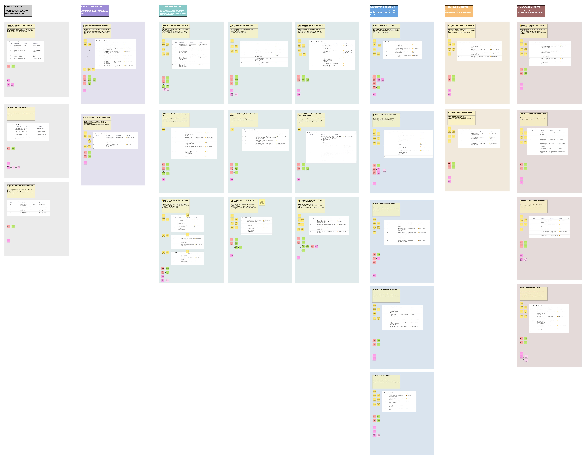
EnlargeA closer look at how the Jobs-to-be-Done framework was connected with user sentiment
Job Story 2.1 · First-time setup

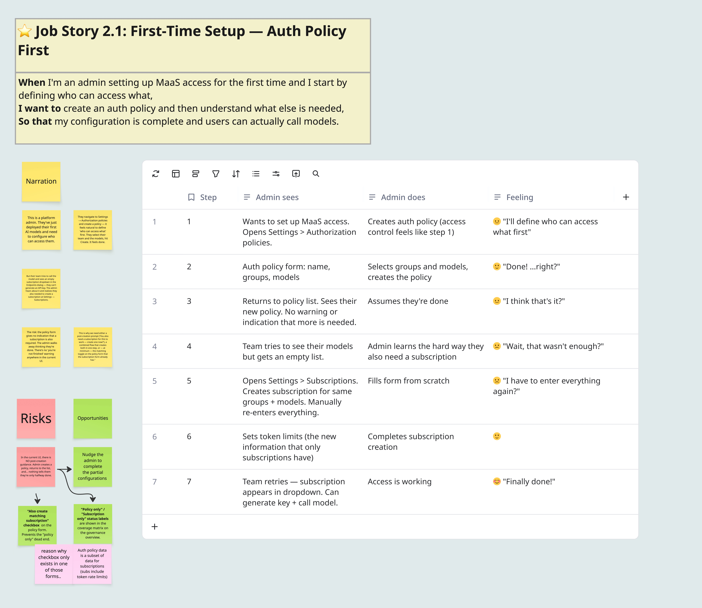
EnlargeJob Story 2.9 · Gap identification

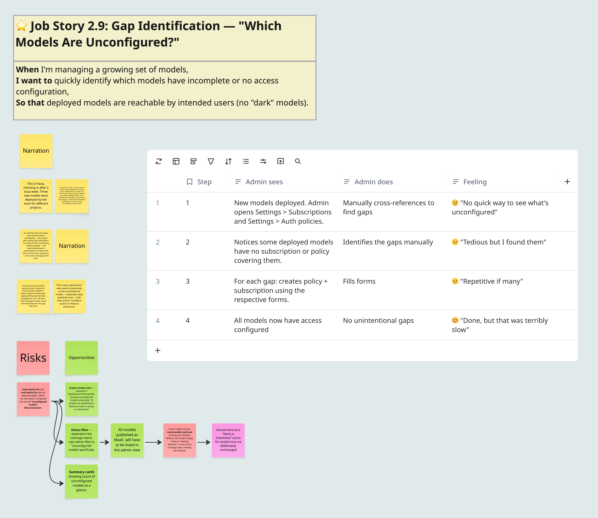
EnlargeTo understand model access, administrators had to piece it together
When an administrator needs to configure or troubleshoot access to a shared AI model, they need to see which groups can use it, what limits apply, and which setting is missing or needs attention. That relationship was spread across separate views, forcing them to reconstruct it from memory before they could act.
Where the previous experience broke down
My discovery work and the workshop exposed more than a page-switching problem. A newly published model could be missing one or both access settings, yet administrators had no single place to see that gap. The model’s availability also lived outside the Settings area. In the resource tables, counts hid group and model names in small, scrollable popovers. Those choices made it difficult to scan coverage, especially as the number of models and groups grew.
Before · Subscriptions

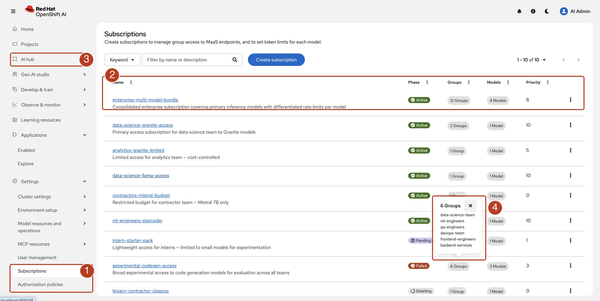
Enlarge- 1Subscriptions and authorization policies lived on separate Settings pages. Administrators had to move between them to investigate access.
- 2The table listed existing subscriptions, not all models. Models with no subscription or policy had no place in this view.
- 3Model availability had to be checked elsewhere in the product.
- 4Group and model names were hidden behind counts. Small, scrollable popovers made the lists difficult to scan.
Before · Authorization policies
 Enlarge
Enlarge - 1The settings navigation was separate from the governance view, so administrators had to move between pages.
- 2The same popover pattern appeared in the policy table, adding another list to inspect.
- 3A policy could cover several groups and models. Administrators still had to find the matching subscription and compare its groups manually; that became harder at scale.
The risk of configuring only half the relationship
The subscription and authorization policy forms presented a related challenge: administrators could not see the corresponding policy or subscription while filling out a form. This made it easier to duplicate coverage, configure only part of a group–model relationship, or assume access was ready before both settings were in place.
I explored ways to bring related information into the creation flow, including a side drawer that would stay open while an administrator filled out the form. I also considered quick-add actions next to existing Models and Groups, allowing administrators to add them quickly. However, during the second, two-week sprint, we prioritized the Overview and supporting resource tables, leaving broader form improvements as a separate opportunity. This case study focuses on those tables and how they help administrators understand and investigate resource relationships.
Putting early ideas in front of customer-facing specialists
I translated the problems we had identified into potential design solutions and rapidly prototyped several screens using Cursor to make the ideas more tangible. I reviewed these early concepts with a Principal Product Designer to get feedback and help shape the direction. We compared a topology-style relationship map with table-based approaches, weighing how quickly each could help administrators find answers, before narrowing the options for review with a Field and Customer Adoption specialist. Field and Customer Adoption specialists work closely with customers to help them adopt products, navigate technical challenges, and troubleshoot issues. Their firsthand knowledge of customer environments and recurring problems made their feedback especially valuable for grounding our designs in real-world scenarios.
For that meeting, I captured screens from the iterated prototype and arranged them on a Miro board with annotations. I started by walking the specialist through the two main job stories we had identified for our admin persona, then briefly introduced the design concepts before walking through the screens. As we discussed each concept, I captured the specialist’s feedback and insights.
Rapid ideation: Exploring possible directions

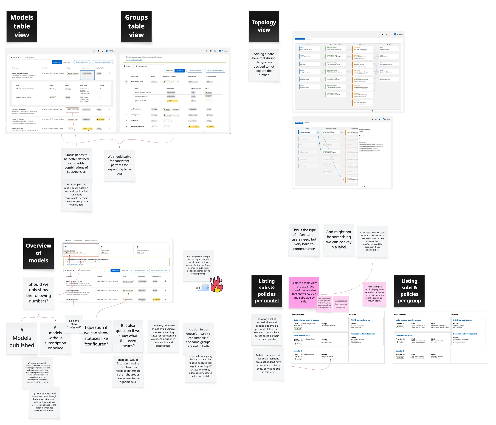
EnlargeTwo questions became central to the design
The conversation with the specialist surfaced a critical, recurring scenario in customer organizations: a user might report that their Group had run out of tokens, and an administrator needed to quickly find its allowance and the relevant settings.
Our discussion reinforced my design direction and helped clarify the two main questions the experience needed to answer:
- Who can use this model?
- What can this team use?
Administrators often needed to start their investigation from either a Model or a Group. The Overview needed to make the relationships between them easy to trace, show whether access was fully configured or something was missing, and provide a clear path to the underlying subscription or authorization policy. It also had to be easy to scan, since customer organizations could have many Models and Groups to manage.
Reviewing early concepts with a field specialist
Enlarge
Helping administrators see and follow the connections
Organizing the experience around administrator questions
I proposed one MaaS Governance area with an Overview and supporting Subscriptions and Authorization Policies tabs. The Overview would group information by model or by group, matching the two main questions from discovery. The existing resource views would remain available for someone who already knew which subscription or policy they wanted to inspect. This way, the Overview supports relationship tracing, while the resource tables support inspecting a known subscription or policy.
Weigh the alternatives
I explored three approaches: side-by-side governance cards, compound table expansion, and a topology-style map.
- The side-by-side cards offered the clearest way to compare subscriptions and authorization policies for each Model or Group, including details such as associated groups and token rate limits. This was my recommended direction because it made relationships easier to understand and information more intuitive to find, though it introduced new UI patterns and potentially increased development effort.
- Compound table expansion offered a more familiar alternative, using an existing pattern from PatternFly, Red Hat’s open-source design system. It reveals details within a table row, one cell at a time, with subscription and authorization policy information organized into structured lists for easier scanning and comparison. Keeping the two types of information in close proximity helped administrators investigate their relationships. Reusing an established pattern also maintained consistency with the rest of the product and reduced implementation effort within the tight timeframe.
- The topology-style map made connections explicit but added navigation complexity.
I ultimately favored a table-based Overview, where administrators could start with a Model or Group and investigate related resources in one place, while keeping both perspectives available to answer complementary questions without changing the underlying relationship model.
Side-by-side card view

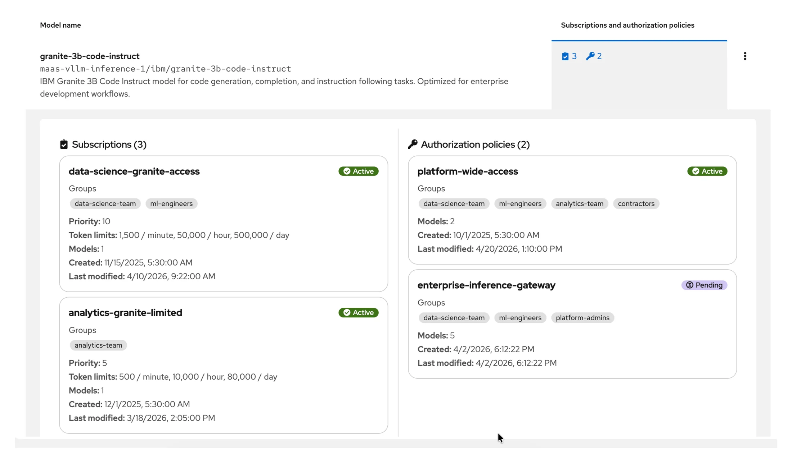
EnlargeCompound expansion view

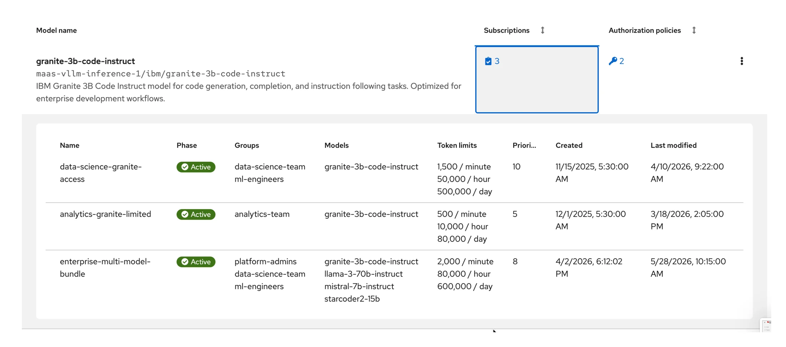
EnlargeTopology/Graph view

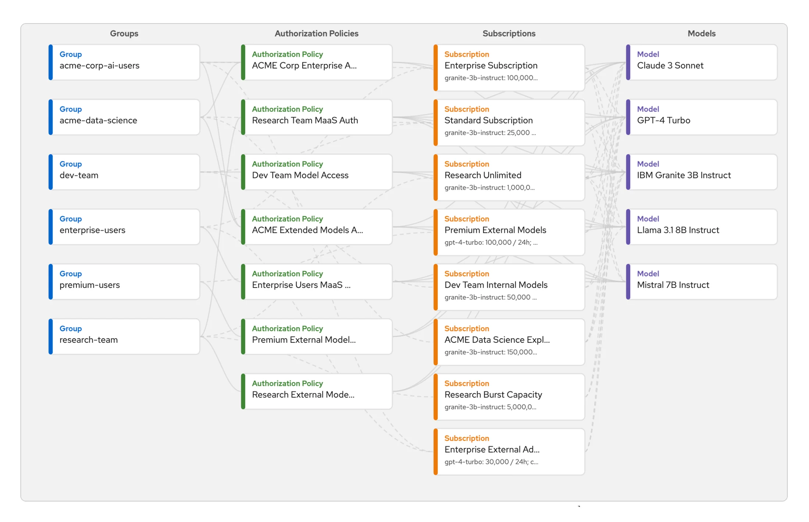
EnlargeMaking sure the design worked with the data
I wanted to make sure the design was feasible with the existing data, so I reached out to Engineering to validate the approach. I learned that the underlying APIs list subscriptions and authorization policies, each referencing models, but don't return a model with all its access settings attached.
Frontend and backend engineers confirmed we could bring that information together for the Overview without making the page noticeably slower. This meant we could organize the experience around how administrators investigate access, rather than how the APIs structure the data.
Making it easier to trace a group's access
There was a lot of information that could be considered important enough to show in the Overview tables, so deciding what to surface and what to keep tucked away was key. I used Miro to brainstorm the information hierarchy, including what belonged in the top-level rows versus expanded views, how row expansion should work, and how to organize content within the stacked cards. I also explored labels, colors, typography, and spacing to make the information easier to navigate.
Working through the information hierarchy
Enlarge
I kept the model name, relevant description, project, model status, and subscription and authorization policy counts in the top-level rows. This gave administrators a quick, scannable summary without overwhelming them with configuration details. Expanding a row revealed subscription and authorization policy cards arranged in two columns for easier comparison. Within each card, I prioritized the most relevant details and organized them for quick scanning.
I also made group names visible within the expanded cards and introduced a way to select them. Selecting a group highlights its matching subscription and authorization policy cards, helping administrators trace that group's permissions and usage limits without losing the surrounding context. This interaction was inspired by an escalation scenario the specialist had shared with us earlier, where quickly identifying the affected group was critical.
Group view · Highlighting a selected team

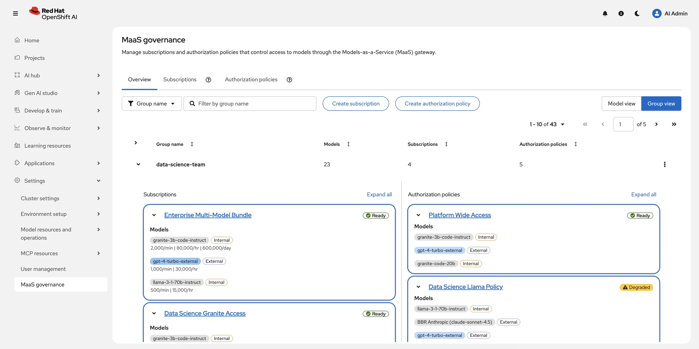
EnlargeSimilarly, I created a Group view that organized information by group rather than model, following the same thoughtful information hierarchy and table structure to keep the experience consistent.
After · Trace matching groups across both columns

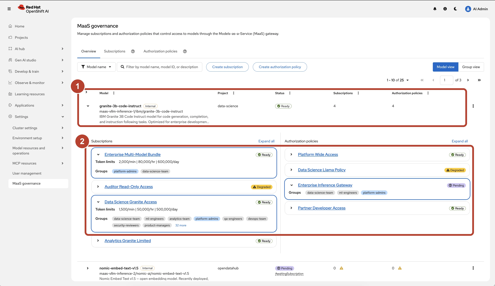
Enlarge- 1The top-level row keeps the model name, relevant description, project, model status, and subscription and authorization policy counts visible for a quick summary.
- 2Selecting a group highlights its matching cards across the two columns. An administrator can connect permission with the relevant allowance without remembering names across pages.
Follow a group across the expanded model row
Below is an interactive excerpt adapted from my working prototype, using sample data and the original group-highlighting behavior. Select a group label, such as platform-admins, to reveal its matching subscriptions and authorization policies. Select it again to clear the highlight.
- Subscriptions
- 4
- Authorization policies
- 4
Subscriptions
- Token limits
- 2,000 / min · 80,000 / hr · 600,000 / day
Groups
Matching group
- Token limits
- 100 / min · 1,000 / day
Groups
Matching group
- Token limits
- 1,500 / min · 50,000 / hr · 500,000 / day
Groups
Matching group
- Token limits
- 500 / min · 10,000 / hr · 80,000 / day
Groups
Matching group
Authorization policies
Groups
Matching group
Groups
Matching group
Groups
Matching group
Groups
Matching group
Select any group label to find it across both columns.
The supporting tables needed a different approach
The Overview helped administrators understand relationships between Models, Groups, subscriptions, and authorization policies at a glance. The Subscriptions and Authorization Policies tabs, meanwhile, let them inspect a specific resource.
For these supporting tables, I compared side-by-side cards with PatternFly’s compound table expansion pattern. I initially leaned toward side-by-side cards for consistency, since the same admin persona would use both tabs and a consistent layout could make the experience easier to learn. However, I kept both options open for the upcoming review with other customer-facing specialists, so they could react to the alternatives and help inform the final direction.
Exploration · Side-by-side resources

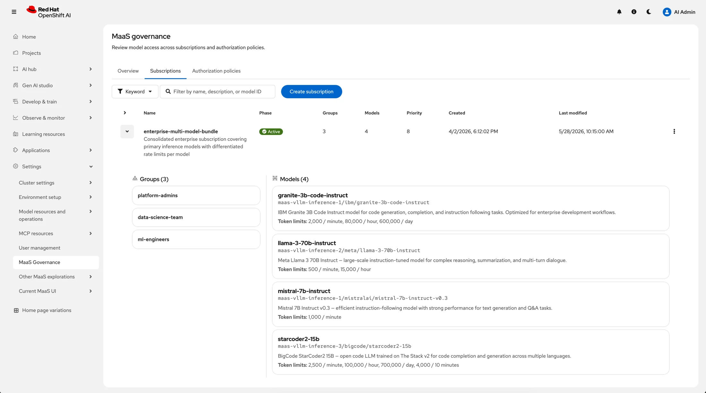
EnlargePlacing both resource types together made the relationship itself the focus of investigation.
Exploration · Compound expansion

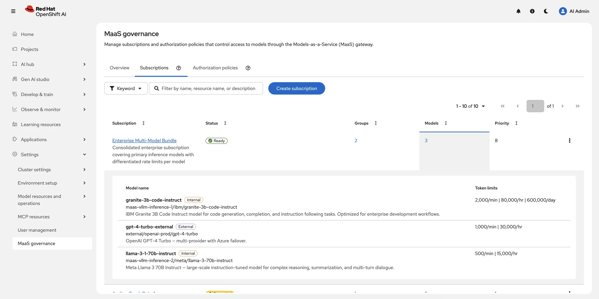
EnlargeThe table pattern kept detail close to its row, but relationships still had to be compared across resource types.
Refining the supporting views with specialist feedback
I shared the latest designs on a Miro board, with annotations to explain the thinking behind each screen. The specialists responded positively to the Overview, which made relationships between connected resources easier to understand.
For the supporting Subscriptions and Authorization Policies tables, they preferred the compound expansion pattern over side-by-side cards. Their feedback helped clarify that these views served a different purpose from the Overview. Administrators visiting these tabs would often be looking for specific information about a subscription or authorization policy. They would likely use the table toolbar filters to narrow down the list, then inspect the relevant resource. A structured table with expandable rows supported this focused way of working, while also offering a cleaner visual presentation than the side-by-side cards.
Table expansion therefore served two distinct purposes across the experience. In the Overview, it helped administrators compare connected resources and trace relationships. In the supporting tables, it let them inspect the details of a specific resource without losing the context of the list.
Before and after · Subscription table

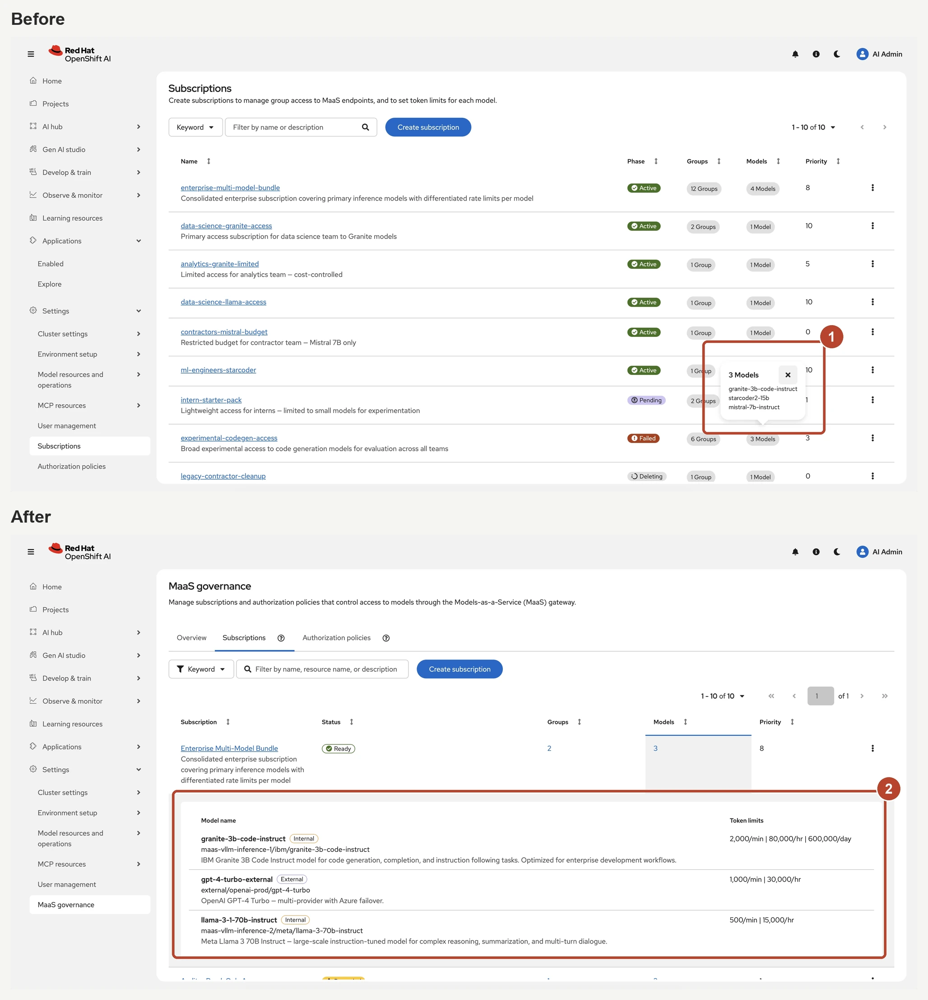
Enlarge- 1A compact popover hid model names and made the list harder to scan.
- 2The expanded cell keeps model names and descriptions visible in the table for inspection.
Uncovering a missing need: GitOps workflows
During the discussion, the specialists also surfaced a critical need we had not accounted for. Teams using GitOps, where configuration is managed through version-controlled files, needed an easy way to access the underlying YAML configuration directly from the relevant resource.
I shared design proposals for YAML access with the PM and engineering teams over Slack to confirm scope and feasibility. Both teams agreed the addition could be included in the release, bringing this workflow into the planned experience.
Configuration stays close to the resource · YAML in details

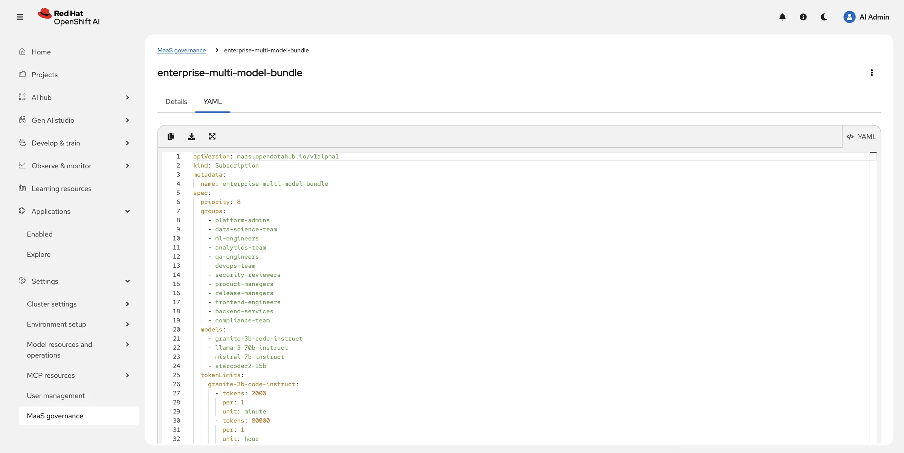
EnlargePrioritize the experience and refine it through feedback
In our weekly UX, product, and engineering review, we evaluated the latest designs for feasibility and finalized the revised navigation. We consolidated the two separate settings pages into a single MaaS Governance page, with the new Overview tab alongside Subscriptions and Authorization Policies as sibling tabs.
I shared the latest interactive prototype, built with Cursor, so reviewers could expand rows, filter results, and try the Group-highlighting behavior firsthand. Experiencing the interactions helped them assess the look and feel of the UI and make more informed decisions than static screens alone could support.
With code freeze approaching, we also needed to prioritize the design work for engineering handoff. I walked stakeholders through the work broken into deliverable pieces, and we agreed on the implementation order. Engineering would first focus on the Model view, followed by the enhanced Subscriptions and Authorization Policies tables, including YAML access. Enhanced filters across all three table views were also part of the plan, allowing administrators to narrow results by attributes such as Model name, Group name, status, subscription name, and authorization policy name.
Polishing the details before handoff
After the review, I incorporated the smaller design changes suggested by stakeholders and worked with our content designer to refine the microcopy.
I also prepared a Google Doc outlining the product analytics events we would need to track in Amplitude. Our research team was developing a skill to help generate these tracking requirements. Although it was still a work in progress, it gave me a useful first draft, which I reviewed, corrected, and expanded. I also accounted for the fact that telemetry was optional for customers and that events could not be collected from disconnected clusters.
I shared the updated content and analytics requirements asynchronously for a quick stakeholder review. Once they were approved, I handed off the final designs, microcopy, and event-tracking requirements to engineering through Slack.
The handoff included a link to the live interactive prototype hosted on GitLab, along with annotated screenshots on Miro. The annotations specified implementation details, including which PatternFly components to use, what modifications were needed, and how particular interactions should behave. Since the live prototype did not support comments, the Miro board also gave developers a place to ask questions and clarify design details during implementation.
Before and after · Reconstruct access across pages

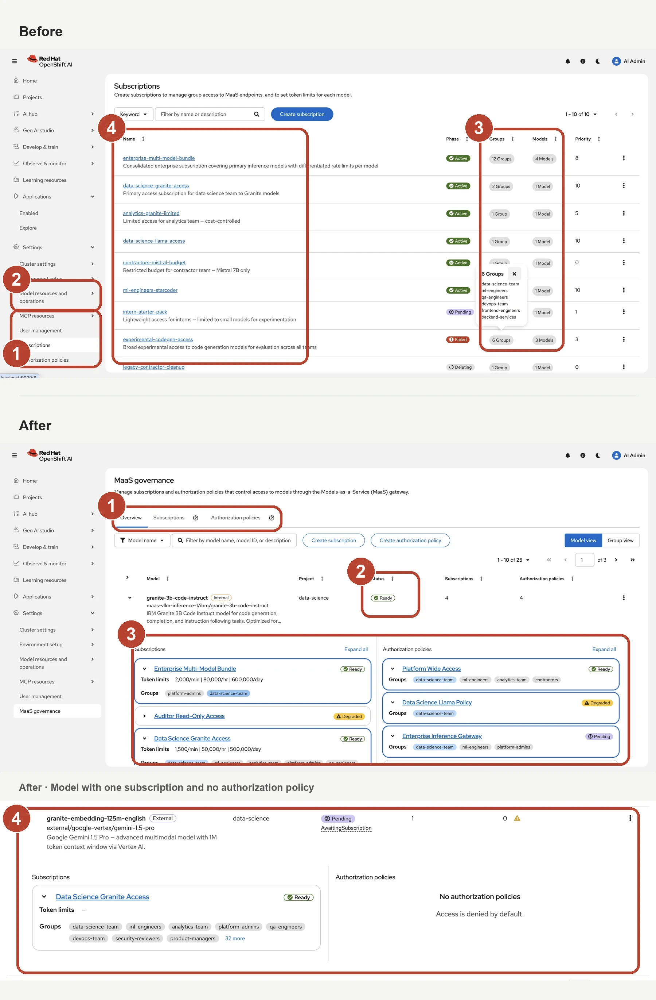
EnlargeBefore
- 1Separate settings views required page switching.
- 2Model availability had to be checked elsewhere.
- 3Group and model names were hidden behind counts, making the relationship harder to trace.
- 4A model without resources was absent from the list.
After
- 1The shared governance area keeps the model, subscriptions, and authorization policies in one place.
- 2The model availability (status) remains clearly visible in the same view.
- 3Model, group, subscription, and policy names are visible in one view. Selecting a group highlights its connections across both settings.
- 4The model remains visible even when its access setup is incomplete; this example has a subscription but no authorization policy.
From scattered settings to a clearer picture of model access
The redesigned MaaS Governance experience brought access relationships into an Overview, alongside improved Subscription and Authorization Policy tables. Designed for an estimated audience of 1,000+ RHOAI administrators globally, the experience supports Model and Group perspectives so administrators can start with the question they have, inspect related settings, trace connections, and spot incomplete configuration without piecing information together across separate pages.
Key takeaways
Get feedback from people who know the customers, and get it early.
Our Field and Customer Adoption specialists brought real-world context we couldn't have gotten from internal design discussions alone. Getting their feedback early helped challenge our assumptions and shaped what we prioritized. It reminded me how valuable those conversations are, especially when direct customer access is limited.
Similar-looking problems don't always need the same solution.
The Overview and supporting resource tables dealt with the same information, but served different purposes. Side-by-side cards worked better for comparing relationships in the Overview, while compound expansion made more sense for inspecting individual subscriptions and policies. Choosing the right pattern meant looking closely at what someone was actually trying to do.
Bring technical constraints into the conversation early.
The Overview needed data that the existing APIs didn't provide in that form. Discussing this with frontend and backend engineers early helped us find a feasible approach without compromising how administrators would investigate access. It reinforced why I prefer working through design and technical questions together, rather than treating feasibility as a final check.
Demos of what shipped
Choose a thumbnail to play its walkthrough below.
Model view · Start with a model to investigate access
Silent walkthrough (1:04 mins): Expand a model row, inspect its related subscriptions and authorization policies, and select a group label to trace its connections. Use handy filters to see specific information.
Group view · Start with a team to investigate access
Silent walkthrough (0:53 mins): Switch to Group view, expand a group, and inspect the related models, subscriptions, and authorization policies. This perspective addresses “What can this team use?”
Subscriptions table · Inspect details without losing the table
Silent walkthrough (0:34 mins): The supporting Subscription table, including expanded detail and resource inspection.
Authorization policy table · Inspect details without losing the table
Silent walkthrough (0:32 mins): The supporting Authorization Policy table and its inspection controls.